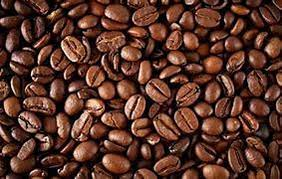

The Nestlé company history begins in 1866, with the foundation of the AngloSwiss Condensed Milk Company. Henri Nestlé develops a breakthrough baby food in 1867 and in 1905 his company merges with Anglo-Swiss to form what we know as the Nestlé Group.In 2016, Nestlé, one of Switzerland’s iconic brands, celebrated its 150th anniversary. Delve into the history of the brand and find out about its origins.
The story begins with the Anglo-Swiss Condensed Milk Company’s Milkmaid brand. In 1866, the Company started supplying condensed milk as an alternative to fresh milk. Henri Nestlé, not to be outdone, developed his own ‘farine lactée’ and launched it in Vevey, Switzerland. Nestlé’s products included milk-based baby food and infant formulas. In 1875, Nestlé supplied Swiss chocolatier Daniel Peter with condensed milk, which he used to blend the first milk chocolate. However, it would be another 20 years before Nestlé would become involved in the chocolate industry.
In the meantime, the competition between Nestlé and the Anglo-Swiss company heated up. Eventually in 1905, when Anglo-Swiss’ plans to expand to the U.S. flounder, the company merged with Nestlé. At the same time, Nestlé launched its own milk chocolate, produced by Peter & Kohler. Nestlé’s first chocolate products were produced at the start of the twentieth century | © Evan-Amos /WikiCommons
By this point, Nestlé owned factories across Europe, the U.S., Australia and warehouses in Singapore, Hong Kong and Bombay. When World War I began, things became difficult for the company as demand for condensed milk rocketed but supplies plummeted. As a result, Nestlé’s focus shifted to the U.S. and Australia, where new factories were opened. The shift was so successful that production doubled by the end of the war.
The next 30 years were a series of ups and downs for the company. As for so many other businesses, the Wall Street Crash of 1929 hit hard. But in the 1920s Nestlé bought Peter-Cailler-Kohler, Switzerland’s oldest chocolate company. The next decade brought further success with the malt chocolate drink Milo hitting markets in Australia.
Soon after, in 1938, came a momentous occasion, the fruits of which are probably sitting in your kitchen cupboard today. Nescafé, the first mass market instant coffee, was launched. It came about after the Brazilian government asked Nestlé to do something with the masses of excess coffee they were producing at the time.
After World War II, Nestlé expanded its range of products again, purchasing fellow Swiss firm Alimentana, which produces Maggi soups. In the 1950s, Nestea hit markets in the US, quickly followed by Nesquik, which became a roaring success, both of them becoming best-sellers. At this time, Nestlé continued its march forward, buying up frozen food firms and diversifying into pharmaceuticals and cosmetics, all the while expanding its food and drink products.
Nestlé’s instant coffee came about as a way to use up excess coffee beans | © Olle Svenson /Flickr
But in 1977 the steady expansion was shaken when a boycott of Nestlé was called for by consumers who raise questions about the company’s ‘aggressive’ marketing of its breast milk substitutes. The boycott led to the World Health Assembly adopting the International Code of Marketing of Breast-milk Substitutes, which Nestlé signed on to in 1984, bringing an end to the boycott. The year after the boycott ended, Nestlé buys the Carnation Company for $3 billion, in what is one of the largest corporate take overs at the time. One year later, Nespresso capsules first hit the shelves, advertising the full barista experience.
In the 21st century, Nestlé continues its growth. It built upon its mineral water interests by snapping up French and Italian firms, launched Nestlé Purina Petcare in 2002, becoming a force in the pet-food sector in the process, and in 2010, Kraft Foods’ frozen pizza comes under the company’s umbrella. Many other enterprises have been launched by the company, but we can trace its roots all the way back to the town of Vevey in Switzerland, where one man sought to provide a healthy option for mothers who were unable to breastfeed, and make some money in the process. Today, Nestlé is the biggest food and drink company in the world, operating in 194 countries and producing everything from face cream to dog food; truly a far-cry from Henri Nestlé’s first venture into condensed milk 150 years ago.
We unlock the power of food to enhance quality of life for everyone, today and for generations to come
USEFUL LINKS